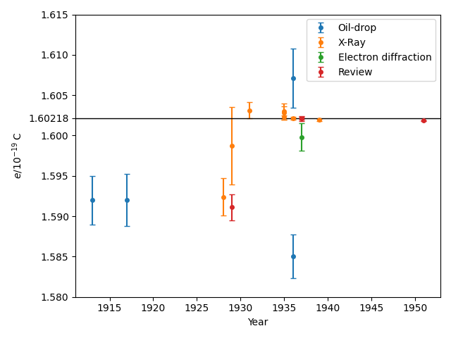

GT 1000 · Lecture 13
2026-11-20
| What | When | Points |
|---|---|---|
| No class (Thanksgiving) | Nov. 27 | — |
| Course wrap-up and in-class reflection | Dec. 4 | — |
Today Elouan showed what goes wrong in science. These slides are the other side: habits that keep you out of trouble.

An error bar is a promise. Make it honest, and include what you don’t control.
Figure: (SciPython 2021), CC BY-SA 4.0. Data: (Millikan 1913; Feynman 1974)
“You must not fool yourself — and you are the easiest person to fool.” — Richard Feynman
Check the results you like as hard as the results you don’t.
Plagiarism at Georgia Tech: submitting work “wholly or substantially identical” to someone else’s without credit. It is an Honor Code violation.
When in doubt, cite it. Then ask your instructor.
Every slide today has a source line. That is the habit.
If you would not want your name on it, it is not done yet.
Source: (American Physical Society, n.d.; Dawson 2003)
GT 1000 · Fall 2026 · Section D03 · Georgia Institute of Technology